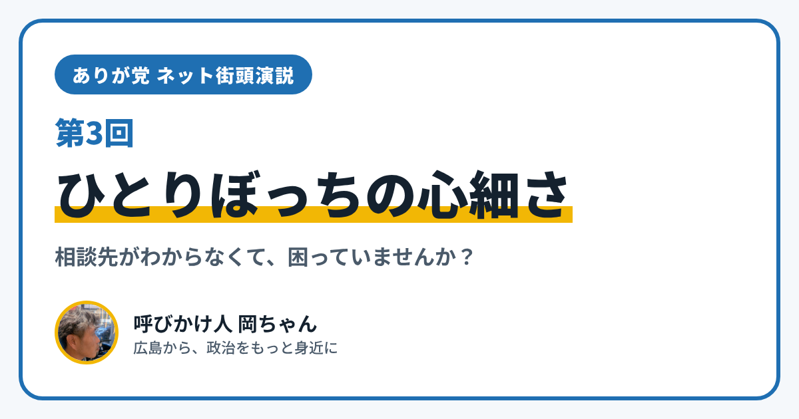

ありが党 ネット街頭演説 第3回｜ひとりぼっちの心細さ

こんにちは、ありが党の呼びかけ人、岡ちゃんです。今日のネット街頭演説のテーマは「ひとりぼっちの心細さ」、つまり孤独や孤立のことです。
だれとも話さないまま一日が終わってしまったこと、ありませんか？ 困っていることがあるのに、だれに相談したらいいのかわからなかったことはありませんか？
今日は、孤独や孤立について、国のしくみを2つ紹介します。
「だれにでも起こりうること」として法律ができました
1つめは「孤独・孤立対策推進法」です。2024年4月1日から始まった法律で、国や都道府県・市町村が、孤独や孤立の問題に取り組むための考え方や、進め方を決めています。
この法律のもとで、孤独や孤立は「人生のあらゆる場面で、だれにでも起こりうるもの」で、社会全体で向き合う課題だと考えられています。ひとりで抱えこむのが当たり前、ではなくなってきているんです。
合う相談先を探せるサイト「あなたはひとりじゃない」
2つめは、国のウェブサイト「あなたはひとりじゃない」（https://www.notalone-cas.go.jp/）です。
- いくつかの質問に答えると、約150の支援制度や相談窓口の中から、自分の状況に合ったものを、チャットボット（自動で答えてくれるしくみ）で探すことができます
- 大人向けのページと、18歳以下の人向けのページがあります
「どこに相談したらいいかわからない」というときの、最初の入り口として使えそうです。
僕が大事にしたいこと
僕は、孤独や孤立は、その人の性格や努力のせいではなく、だれにでも起こりうることだと思っています。そして、障がいがあってもなくても、ふらっと立ち寄れて、自然に人とつながれる場所が、もっと身近にあってほしいと思っています。
あなたは、どんなときに「ひとりだな」と感じますか？ 話し相手がいないこと、外に出にくいこと、相談先がわからないこと。小さなことでも大丈夫です。InstagramのDM（@ayu19841002）や、ありが党のページから、あなたの暮らしの声を聞かせてください。
ありが党は、まだ僕ひとりから始めたばかりです。政治をもっと身近にしたいと思う方、一緒に考えてくれる仲間を探しています。InstagramのDM（@ayu19841002）で気軽に声をかけてください。